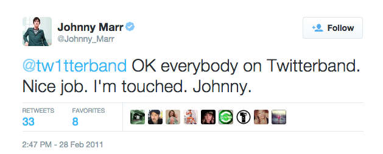

26
Formed in 2010, the 'Tw1tterband project' is a band that releases electronic music online. Formed by Richard Newman after being laid off from his job, the band's latest release 'Please please please' was a moderate hit, seeing 2,000 downloads on its first day after release. What is the claim to fame of this band?
